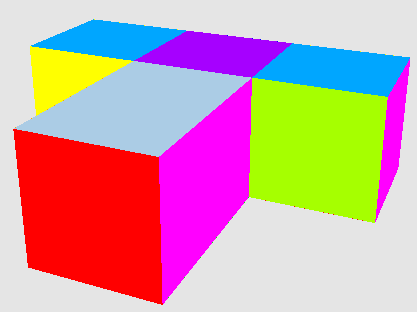
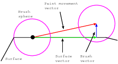

Mesh Painting on Subdivision Surfaces In Virtual Environments
1#1 Benjamin Gregorski 2#2Falko Kuester
1#1Bernd Hamann 1#1Kenneth I. Joy
1#1 Center for Image Processing and Integrated Computing (CIPIC)
Abstract
Virtual environments allow us to model and design objects in a true 3D setting.
We present an algorithm for interactive painting on subdivision surfaces
within a semi-immersive virtual environment.
A surface is first parameterized to create a set of texture maps that cover it.
Polygons are then assigned texture coordinates and mapped into one of the textures.
A set of line segments is used to represent a brush stroke across the surface.
As the surface is painted, the texure map is updated to reflect its new color.
Multiple texture maps covering the surface allow
more detail to be painted in certain areas by using textures of different sizes.
Within the virtual environment, the user is able to paint on the surface
using a stylus tool that acts like a paint brush.
Keywords: Virtual Reality, Immersive Environments,
Interactive Modeling, Subdivision Surfaces, Mesh Painting
Virtual environments (VEs) have been in use for many years in applications
such as automotive and industrial design as well as advanced training and simulation.
In these applications, VEs help to improve the efficiency of product design processes
and aid in the learning process of new skills.
Modeling applications, such as surface, editing that take advantage of VEs
can greatly improve the speed and efficiency of the
modeling process by adding an ``extra dimension''
making it easier to discern spatial relationships
between objects and to interact with them.
Polygon meshes are a standard representation of 3D objects for applications
in geometric modeling, animation, and grid generation.
Sometimes, it is necessary to give models
a realisitic appearance instead of the standard look produced by smooth shaded polygons.
Surface characteristics can be rendered using procedural shading and texture mapping methods
to produce surfaces that simulate real-world material such as wood, marble, cloth, or metal.
Another method for altering the appearance of a surface
is to have an artist or designer ``paint''
these qualities onto the surface using a brush that applies colors or textures.
Figure 1:
Virtual Environment setup showing workbench, data gloves, and stylus
|
Subdivision surfaces have emerged as a powerful tool for surface modeling and editing.
Lounsbery et al. [13] developed
multiresolution analysis techniques using wavelets and used them for
surface editing at coarse and fine levels.
These ideas were also developed by Stollnitz et al. [14].
Modeling with subdivision surfaces was explored by Zorin et al.
[16], where Loop surfaces [12] and
Taubin smoothing [15] are the means to
perform multi-resolution editing of a polygonal model.
These techniques allow for interactive
editing of subdivison surfaces on coarse and fine levels.
Subdivision surfaces have also been extended to general design applications
such as computer animation and geometric modeling.
Hoppe et al. [8]
developed rules for generating creases, dart, and sharp features
that allow subdivisions surfaces to model a wider range of objects.
Subdivision surfaces with sharp features were further developed by DeRose et al.
[4], where they use subdivision techniques
to generate models used in computer animation.
Biermann et al. [2], have developed rules for controlling
normal vectors on interior and boundary areas of surfaces.
In this paper, a method for painting on subdivision
surfaces within virtual environments is presented.
Our algorithm first determines a set of texture maps that cover the surface.
Each polygon in the subdivision surface has texture coordinates
that are associated with a texture map.
Texture maps are referred to as base textures.
When a point on the surface is painted, the texture coordinates of the
point are determined, and the base texture corresponding to the polygon is modified
to reflect the color change.
As a user paints on a surface, the textures are updated
and the painted model is rendered in real time.
The system is integrated into a virtual environment using an immersive workbench
and spatially tracked data gloves for interaction.
A picture of our virtual environment configuration
is shown in Figure 1.
The application was developed as a plugin for
the VirtualExplorer framework presented in [11].
Mesh painting in 3D space is a common practice in companies
that work on animation and special effects.
Several commercial packages that allow users to paint on 3D objects are available.
Hanrahan and Haeberli [7] have described a system for painting on 3D
parameterized meshes using a 2D input device.
Painting is performed directly on the
mesh in a WYSIWYG (What-You-See-Is-What-You-Get) fashion.
A user can manipulate the parameters used to
shade a 3D object by applying pigments to its surface.
The pigment has all the properties associated with
material shading models such as diffuse and specular color and surface roughness.
This idea was used by Agrawala et al. [1],
along with a flood-fill algorithm for painting mesh vertices.
Incremental drawing allows users to paint
large meshes interactively without the use of expensive hardware.
Since hardware has improved greatly in the past five years,
their methods could probably be extended to larger meshes.
In their system, a force feedback Polhemus device is used to paint on a triangle mesh.
Kuester et al. [10]
have developed techniques for interactive modeling environments using immersive technologies.
The inTouch system presented in [6] is a system for painting and modeling
subdivision surfaces.
This system uses a haptice device for multiresolution mesh editing and mesh painting.
Ferley et al. [5] use isosurfaces to represent the surface being modeled.
This approach enables a user to model surfaces of arbitray shape and topology.
Figure 2:
Subdivision of a quadrilateral and corresponding texture coordinates
|
Figure 3:
Subdivision of a triangle and corresponding texture coordinates
|
Base textures as discussed earlier
are a set of texture maps that cover a surface.
The number and size of these texture maps determine how much detail
can be painted onto a particular area of the surface.
In order to determine how these base textures cover the
surface, a surface parameterization needs to be defined.
This parameterization maps a point on the surface to a texture
coordinate in a specific base texture. For subdivision surfaces,
the base mesh can be used as an initial parameterization.
One base texture is associated with each face of the base mesh, and
texture coordinates are associated on a per-face basis.
As the mesh is subdivided, new texture coordinates are determined
for the new faces, or children, by linearly subdividing the texture
coordinates of the original faces or parents.
Subdivision of texture coordinates is shown for quadrilaterals in Figure
2 and for triangles in Figure 3.
The left polygon shows the initial texture coordinates for the parent face,
and the right polygon shows the texture coordinates of the child faces.
It is important to note that the texture coordinates are assigned on a
per-face and not a per-vertex basis even though this is not expressed in the
figures. Texture coordinates in both parametric directions (u and v)
vary between 0 and 1.
Figure 4:
Base mesh, each base texture is a single color

|
All new faces that result from the subdivision process use the same base
texture as their ``parent'' face. This is illustrated in Figures
4 and 5 for a Catmull-Clark [3] subdivision
surface. The base mesh of the surface, shown in Figure 4,
has been colored such that no adjacent faces have the same color.
Each face in the base mesh is assigned to a unique base texture map,
and is assigned texture coordinates according to the scheme shown in Figure 2.
The texture maps contain a single color that corresponds to the color for the face,
and the faces in turn are colored using these texture maps.
Figure 5:
Mesh from Figure 4 after 3 Catmull-Clark subdivisions
|
As the mesh is subdivided, children inherit the base texture
of their parent. The initial resolution of the base textures is
256x256 texels. The size of a base texture can be increased or
decreased during the editing process by subsampling or supersampling
the initial base texture. In either case, the texture coordinates
of the faces associated with the base texture do not need to be changed.
Brush Strokes
To paint on a surface, the concept of a brush stroke similar to that presented by
Gregory et al. [6] is used.
A brush stroke is modeled by a series of line segments on the polygons
of the subdivision surface, called stroke segments, and a
brush that determines how the surface properties are modified.
Each segment is confined to a single face in the mesh and represents
a line in the face's base texture.
A segment is not a line between two points on the face but rather a line
between two texture coordinates in the base texture associated with the face.
This is similar to the approach used by Khodakovsky and Schröder
[9] for editing fine underlying features on subdivision surfaces.
However, instead of modifying geometry around a line segment, we modify surface attributes by
editing the texture map around a line segment according to the different properties of
a currently applied brush.
Figure 6 shows a brush stroke that spans several triangles.
The brush stroke is broken into six segments marked A-F.
Each segment is associated with one face. Each face is associated
with one base texture and has separate texture coordinates for its vertices.
A brush stroke is drawn by rasterizing each of its stroke segments in the corresponding
texture maps and then modifying surrounding texels according to the brush properties.
Figure 6:
Brush stroke and stroke segments
|
When painting in 2D-space, movement vectors on the screen are
translated into 3D movement vectors.
This is achieved by mapping the start and end points of a mouse movement
on the screen to points on the near plane of the camera.
The process is illustrated in Figure 7.
Two rays from the camera pass through the points on the near plane
and are intersected with the object being painted.
This yields two points in physical object space that define the movement
vector in 3D space.
The movement vector is projected back onto the surface to form the line segments of the brush stroke.
Beginning with the face intersected by the starting ray, the movement vector is projected
into the plane defined by the face to form the stroke segment for that face.
The next face is found by determining which edge or vertex
of the face the projected vector intersects.
The face on the opposite side of the edge or vertex becomes the next face.
The new movement vector is projected onto this new face, and the process continues until
the length of the movement vector is below a threshold.
Figure 7:
Creation of 3D movement vector
|
The rasterization of a stroke segment in a texture
map touches a set of texels called the stroke texels.
Figure 8 shows a single stroke segment in a triangle
and the corresponding stroke texels in the texture map.
The stroke segment is shown in physical and texture space along with the
mapping of texture coordinates from physical space to texture space.
The properties of a brush define how the stroke texels and the surrounding texels
are modified.
These are the properties of a brush:
- Shape and size.
The shape and size of a brush define which surrounding texels are modified.
The size of a brush is given in physical space, and is described by a bounding sphere.
All texels that lie within this bounding sphere can be modified by the brush.
The shape of the brush determines which texels within its bounding sphere
are modified.
A circular brush, for example, selects which texels are modified based on the distance
between the center of the texel and the center of the corresponding stroke texel.
- Color function. The color function defines the color
of the brush at a particular position within its extent, i.e., the volume of space
defined by its size and shape.
The color function can be a basic function, such as a checker or stripe pattern,
or a more complex function such as procedural marble or wood.
- Blend function. The blend function defines
how the brush attributes, as defined by the color function, are
combined with the existing texel. The blend function
can either replace the existing texel attributes or blend them
with the brush attributes.
Brushes modify the diffuse color of the surface, represented by an RGBA tuple.
It is also possible to use the brushes to paint different material properties,
such as specular highlights and bump map information, onto the surface.
Interactive rendering can be achieved by using multi-texturing
and normal mapping to render the surface.
Figure 8:
Brush stroke and stroke texels
|
The texels surrounding the stroke texels are modified
according to the characteristics of the brush stroke.
The surrounding texels fall into one of three categories:
- Texels that lie in the same face and same texture as the stroke texel.
- Texels that lie in a different face and same texture as the stroke texel.
- Texels that lie in a different face and different texture as the stroke texel.
These texels are found by placing the brush-specific bounding sphere at each stroke texel and
using the size of the brush to determine the surface faces that are touched.
The position of the brush's bounding sphere in physical space
is found by mapping the position of the stroke texel from texture to physical space.
This is done as follows:
- The texel's indices into the texture map are converted to texture coordinates
that lie in the interval [0,1].
- The barycentric coordinates of the texel's texture coordinates are determined using
the texture coordinates of the face's vertices.
- The barycentric coordinates are used to compute the texel's position in physical
space from the vertices of the face. The position is computed for the center of the
texel.
Starting with the initial face, the surrounding faces in the mesh
are searched to find those
faces that are partially or completely inside the sphere.
The search is performed in a breadth-first fashion.
This method prevents faces from being painted incorrectly when two parts of
the surface are close together.
This is illustrated in Figure 9:
The sphere created at the stroke
texel contains faces from the far side of the surface.
The breadth-first search starting at the initial face will not include
the faces on the far side of the surface.
As a result, these faces will not be incorrectly painted when the brush is moved over the surface.
A special case is shown in Figure 10.
The brush contains all of the faces on some path from the painted
side of the surface to the far side of the surface.
In this case, the breadth-first search used to find the painted faces
will find those faces on the far side of the surface correctly.
Figure 9:
Faces on the far side are not painted when a breadth-first search is used.
|
Figure 10:
Both sides of the surface (dashed) are painted.
|
We have integrated our system into a Virtual Reality
environment using an immersive workbench from Fakespace Corporation.
The semi-immersive environment allows stereo viewing using headtracked shutter glasses.
This has many advantages over traditional editing environments where the user must interact
with objects projected onto a 2D screen.
In our system, a user can interact with the environment
using spatially tracked data gloves and a stylus.
The interface was implemented using the VirtualExplorer
framework developed by researchers at UC Davis and Irvine.
The VirtualExplorer framework is an object-oriented, customizable, plugin-based
framework for VR applications.
The basis of VirtualExplorer is a run-time plugin system
that allows users to dynamically load, unload, enable, or disable
different modules of functionality.
Our algorithms are implemented as a plugin for the VirtualExplorer framework.
The painting process is performed as the user moves the brush through 3D space.
The brush is drawn at the position of the current stroke texel
being painted to indicate where the brush is during painting.
Painting gestures are broken down into gestures that move the brush along the surface
and gestures that move the brush towards or away from the surface.
Gestures that move the brush along the surface are used to determine the stroke
segments that compose the current brush stroke. The movement vector
associated with this gesture is called the surface vector.
Gestures that move the brush towards or away from
the surface determine how much of the brush is in contact with the surface,
and thus the section of the surface that is painted. The movement vector
associated with this gesture is called the brush vector.
The decomposition of a movement in 3D space into the surface vector and brush vector
is illustrated in Figure 11.
A movement vector is initiated at some point on the surface. This movement vector
is divided into components tangent and perpendicular to the surface.
The component along the surface is found by the same algorithm for
determing the stroke segments as described in Section 4.1.
Figure 11:
Decomposition of painting gesture into surface and brush vectors
|  |
Painting gestures are used to determine which portion of a surface is painted
and how much paint is applied to this area. As the brush is moved across the surface
in a painting gesture, the individual components of the gesture can be used to
determine the extent to which a particular brush interacts with the surface.
The brush vector is used to determine how much of the brush
is touching the surface, and thus how many texels are painted.
The surface vector is used to determine the stroke segments.
The data gloves allow the user to interact with
the virtual environment in a two-handed free-form manner.
The spatially tracked data gloves provide
position information for the hand and pinch information for the fingers.
The data gloves are used for these purposes:
- Interactive viewpoint selection
- Selection of a surface or surface feature for editing
Interactive viewpoint selection is performed by either translating the viewpoint through the scene
or rotating the viewpoint around a virtual trackball located at some point in the environment.
Viewpoint translation is accomplished by pinching the thumb and index fingers of the data glove
together and moving the glove in space.
Viewpoint rotation is accomplished by pinching together the thumb and index fingers
of both hands and moving them in space. This motion determines a rotation axis
and an angle of rotation.
In scenes with multiple objects, the data gloves are used to select
which surface to edit.
The stylus tool allows a user to select objects in the scene
using a method similar to pointing out objects with a laser pointer.
This enables a user to select distant objects, to bring distant objects
into the foreground, or to move them to specific locatations.
The stylus provides the direction that it is pointing towards
and pinch information for its button. Direction information is available
as a quaternion rotation and as a tuple consisting of direction, pitch, and roll.
The stylus is used for these purposes:
- Selecting objects for modeling
- Painting objects using the stylus as a paint brush
The stylus is represented as a ray in 3D space, i.e., it has a 3D position and direction.
Object painting is performed by pointing the stylus at the surface to select
a starting point and then moving the stylus's ray along the surface to trace
out the path of the brush.
The intersection of the stylus's ray with the surface is used to
create a movement vector in 3D space.
This 3D movement vector is painted on the surface in the manner
described in Section 4.1.
Painting using the stylus can be done in either laser-pointer mode or
paint-brush mode.
In laser-pointer mode, the position of the stylus
is not taken into account, and only the stylus's direction is used to
construct the brush strokes on the surface.
This allows the user to make broader strokes over the surface of the object.
In paint-brush mode, the position of the stylus is used to determine
how the brush interacts with the surface.
In this painting style, the
brush has the notion of how much of it is on the surface, and thus what portion of the
surface is painted.
This allows the user to paint finer strokes over the object.
The stylus tool enables a user to select the points in 3D space that describe the movement
vector within the space of the object rather than on a 2D projection of the object.
Figure 12 shows a painted bunny. The bunny model
was obtained from Standford University's model archive and simplified
using Michael Garland's qslim software.
The base mesh consists of 500 triangles, and is was
subdivided three times using Loop's subdivision method.
There are 500 base textures each with 64x64 texels.
The base textures are assigned colors such that as few adjacent faces as
possible share the same color.
The letters on the bunny were painted with a spherical brush.
The blend function of the brush replaces the existing texel's color with the brush color.
Figure 13 shows the bicycle seat model from Figure 4
subdividided three times using Catmull-Clark subdivision.
There are 18 base textures with 256x256 texels. The small strokes
were painted with a brush of half the size used for the big strokes.
Figure 12:
Painted bunny. Brush shape = spherical, Blend function = replace
|
Figure 13:
Painted bike seat. Brush shape = spherical, Blend function = replace
|
We have presented a method for interactive painting on a subdivision surface
in a virtual environment.
Our algorithm starts by parameterizing the surface using the base mesh
and forming a set of textures that cover the surface.
The user is able to interactively paint on the surface by modifying the underlying texture maps.
The VR environment provides a user with a much better spatial perception of the model
and allows one to paint surfaces in 3D space.
Future work will be directed at the development of new interaction paradigms
in VEs and a user study of these paradigms.
New modeling algorithms that take maximal advantage of a
VR environment need to be investigated, specifically with regard
to the advantages and limitations of our current hardware setup.
A user interface for the VE that provides the user
access to the full range of tools available to an artist has to be developed.
This includes the addition of painting specific items such color selection,
brush selection, and a virtual palette.
The development of a richer user interface will greatly add to the
capabilities of the system.
This work was supported by the National Science Foundation under
contracts ACI 9624034 (CAREER Award), through the Large Scientific and
Software Data Set Visualization (LSSDSV) program under contract ACI
9982251, and through the National Partnership for Advanced
Computational Infrastructure (NPACI); the Office of Naval Research
under contract N00014-97-1-0222; the Army Research Office under
contract ARO 36598-MA-RIP; the NASA Ames Research Center through an
NRA award under contract NAG2-1216; the Lawrence Livermore National
Laboratory under ASCI ASAP Level-2 Memorandum Agreement B347878 and
under Memorandum Agreement B503159; the Lawrence Berkeley National
Laboratory; the Los Alamos National Laboratory; and the North Atlantic
Treaty Organization (NATO) under contract CRG.971628. We also
acknowledge the support of ALSTOM Schilling Robotics and SGI. We thank
the members of the Visualization and Graphics Research Group at the
Center for Image Processing and Integrated Computing (CIPIC) at the
University of California, Davis.
- 1
-
Maneesh Agrawala, Andrew C. Beers, and Marc Levoy.
3D painting on scanned surfaces.
In Pat Hanrahan and Jim Winget, editors, 1995 Symposium on
Interactive 3D Graphics, pages 145-150. ACM SIGGRAPH, April 1995.
- 2
-
Henning Biermann, Adi Levin, and Denis Zorin.
Piecewise smooth subdivision surfaces with normal control.
In Kurt Akeley, editor, Siggraph 2000, Computer Graphics
Proceedings, pages 113-120. ACM Press / ACM SIGGRAPH / Addison Wesley
Longman, 2000.
- 3
-
Edwin Catmull and Jim Clark.
Recursively generated B-spline surfaces on arbitrary topological
meshes.
Computer-Aided Design, 10, September 1978.
- 4
-
Tony DeRose, Michael Kass, and Tien Truong.
Subdivision surfaces in character animation.
In Michael Cohen, editor, SIGGRAPH 98 Conference Proceedings.
ACM SIGGRAPH, Addison Wesley, 1998.
- 5
-
Eric Ferley, Marie-Paule Cani, and Jean-Dominique Gascuel.
Practical volumetric sculpting.
In Proceedings of Implicit Surface '99, Sep 1999.
- 6
-
Arthur Gregory, Stephen Ehmann, and Ming Lin.
inTouch: Interactive multiresolution modeling and 3D painting
with a haptic interface.
In Steven Feiner and Daniel Thalmann, editors, Proceedings of
the 2000 IEEE Conference on Virtual Reality (VR-00). IEEE.
- 7
-
Pat Hanrahan and Paul Haeberli.
Direct WYSIWYG painting and texturing on 3D shapes.
In Forest Baskett, editor, Computer Graphics (SIGGRAPH '90
Proceedings), volume 24, August 1990.
- 8
-
Hugues Hoppe, Tony DeRose, Tom Duchamp, Mark Halstead, Hubert Jin, John
McDonald, Jean Schweitzer, and Werner Stuetzle.
Piecewise smooth surface reconstruction.
In Andrew Glassner, editor, Proceedings of SIGGRAPH '94
(Orlando, Florida, July 24-29, 1994). ACM SIGGRAPH, ACM Press.
- 9
-
Andrei Khodakovsky and Peter Schröder.
Fine level feature editing for subdivision surfaces.
In Willem F. Bronsvoort and David C. Anderson, editors, Proceedings of the Fifth Symposium on Solid Modeling and Applications
(SSMA-99). ACM Press.
- 10
-
Falko Kuester, Mark A. Duchaineau, Bernd Hamann, Kenneth I. Joy, and Kwan-Liu
Ma.
The designersworkbench: towards real-time immersive modeling.
In J. O. Merritt, S. A. Benton, A. J. Woods, and M. T. Bolas,
editors, Stereoscopic Displays and Virtual Reality Systems VII, volume
SPIE Vol. 3957. The International Society for Optical Engineering, 2000.
- 11
-
Falko Kuester, Bernd Hamann, and Kenneth I. Joy.
Virtualexplorer: A plugin-based virtual reality framework.
In R.F. Erbacher, P.C. Chen, M. Groehn, J.C. Roberts, and C.M.
Wittenbrink, editors, Proceedings of SPIE, San Jose, California, USA,
2001. SPIE - The International Society of Optical Engineering.
- 12
-
Charles Loop.
Smooth subdivision surfaces based on triangles.
Master's thesis, 1987.
University of Utah, Department of Mathematics.
- 13
-
Michael Lounsbery, Tony D. DeRose, and Joe Warren.
Multiresolution analysis for surfaces of arbitrary topological type.
ACM Transactions on Graphics, 16(1):34-73, January 1997.
- 14
-
Eric J. Stollnitz, Tony D. DeRose, and David H. Salesin.
Wavelets for Computer Graphics: Theory and
Applications.
Morgann Kaufmann, San Francisco, CA, 1996.
- 15
-
Gabriel Taubin.
A signal processing approach to fair surface design.
In Robert Cook, editor, SIGGRAPH 95 Conference Proceedings,
Annual Conference Series, pages 351-358. ACM SIGGRAPH, Addison Wesley,
August 1995.
- 16
-
Denis Zorin, Peter Schröder, and Wim Sweldens.
Interactive multiresolution mesh editing.
In Turner Whitted, editor, SIGGRAPH 97 Conference Proceedings,
pages 259-268. ACM SIGGRAPH, Addison Wesley, August 1997.
Mesh Painting on Subdivision Surfaces In Virtual Environments
This document was generated using the
LaTeX2HTML translator Version 2008 (1.71)
Copyright © 1993, 1994, 1995, 1996,
Nikos Drakos,
Computer Based Learning Unit, University of Leeds.
Copyright © 1997, 1998, 1999,
Ross Moore,
Mathematics Department, Macquarie University, Sydney.
The command line arguments were:
latex2html -tmp tmp -split 0 surface_painting.tex
The translation was initiated by servant of allah on 2010-11-10
servant of allah
2010-11-10